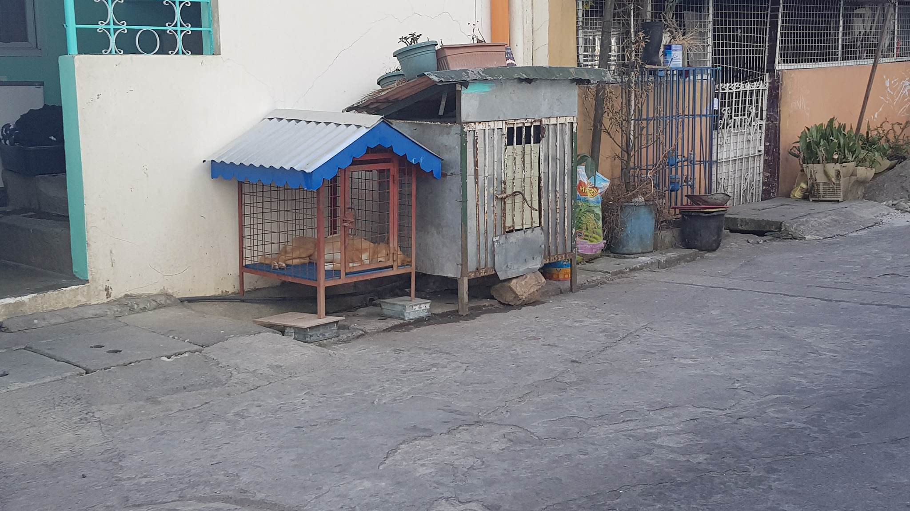
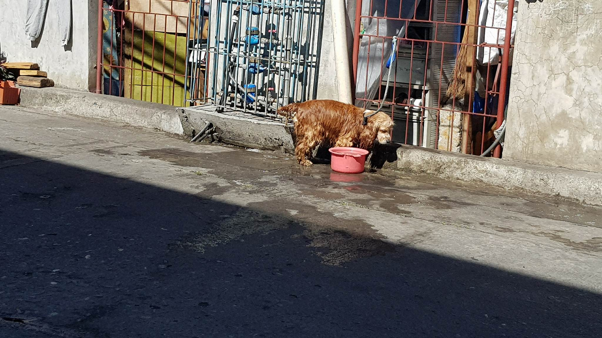
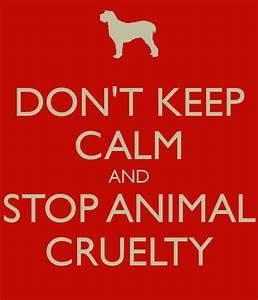

ANIMAL WELFARE
A law regarding the welfare of animals in the Philippines:
Summation of RA No. 8485
The main purpose of this law is mainly to protect the welfare of the animals whether they are terrestrial aquatic or marine within the Philippine archipelago by monitoring and supervising the facilities that is needed by the animals like for breeding, keeping or training of all the animals as object of trade or household pet/s which includes birds. The purpose of this act includes the physical, psychological welfare of the animals, avoidance of abuse, maltreatment, cruelty and exploitation of the animals by maintaining the appropriate standards of shelter or accommodation, feeding and general care, prevention and treatment of sicknesses and/or diseases and assurance of freedom from fear, and unnecessary discomfort and pain, and to allow the animals express their normal behavior.
Penalties one can receive:
- Anyone who does animal cruelty, maltreatment and neglect:
- Imprisonment of one (1) year and six (6) months and one (1) day to two (2) years and/or a fine of not more than One hundred thousand pesos (Php. 100, 000.00).
- Anyone who does animal cruelty, maltreatment, neglect and the animal dies:
- Imprisonment of one (1) year and one (1) day to one (1) year and six (6) months and/or a fine of not more than Fifty thousand pesos (Php. 50, 000.00).
- Anyone who does animal cruelty, maltreatment, neglect and the animal is severely injured and barely surviving on its own.
- Imprisonment of six (6) months to one (1) year and/or a fine of not more than Thirty thousand pesos (Php. 30, 000.00).
- A syndicate
- An offender who makes business out of the animal/s
- A public sever/officer or employee or
- Where at least three (3) animals are involved
If the offense is committed by:
The penalty of imprisonment of two (2) years and one (1) day to three (3) years and/or a fine of Two hundred fifty thousand pesos (Php. 250, 000.00). In foregoing situations, the offender will be imprisoned when they can’t pay the fine.
These are recommended actions that the residents of Sanitary Camp should do for their pets:
- Put your dog on a leash.
- Provide a dog house for your dog/s or an appropriate house for other pets.
- Train your dogs or pets
- Keep your dogs inside your house premises.
- Make sure that they are vaccinated for rabies.*
- only applies to animals that may have rabies.
- When bringing your pet outside (for a walk or a stroll), make sure to clean up after your pets.
- Make sure that your pets are comfortable and well taken care of.
Photos:
- 
- 
- 
About Us
Kyla Alunday
A third year Computer Science Student. Hobbies include dancing and singing in the shower. Likes to play basketball and watch movies. Currently trying to get fat. She's all about equality.

Michael Ampaguey
A quiet and timid guy, who likes drawing, origami, handicraft, reading, and gaming. His skills are too many, we can't metion them all in just one web page.
Noreen Dizon
An ordinary weird girl who aspires to be successful someday. Likes to read and draw to pass the time before she needs to get back to work.

Riechel Fabrigas
A third year student of Saint Louis University, taking up the course Bachelor of Science in Computer Science. Can be flexible, resourceful, and think or work in a critical and analytical way. Likes badminton and digital photography.
Louel Lagasca
A wannabe graphics designer, who likes to sing, play the piano, and sketch for fun. Currently trying to do his best to compensate for the pricey tuition and living expenses his parents are paying for his college education. He didn't come all this way to mess around, but still struggles to keep his ever evolving sleep schedule stable. He is a person who thrives on the satisfaction of doing a job well done and on the idea of constant self-improvement.
Kristen Villegas
19 years old. A team player who can work with anyone. Open to learning and discovering new things. She wants to pursue her other dream which is directing film after getting her degree in Computer Science. It might not look like it but she's really fun to be with.